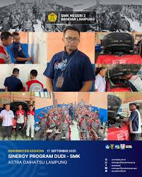
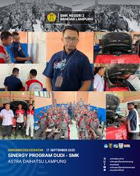

Profil Sekolah

Kami mengucapkan selamat datang di website resmi SMK Negeri 2 Bandar Lampung, yang dirancang sebagai media informasi, komunikasi, dan interaksi antara civitas akademika dan masyarakat luas. Website ini merupakan wujud keterbukaan kami dalam mendukung kolaborasi dan menyampaikan berbagai inovasi di bidang pendidikan kejuruan.


 
